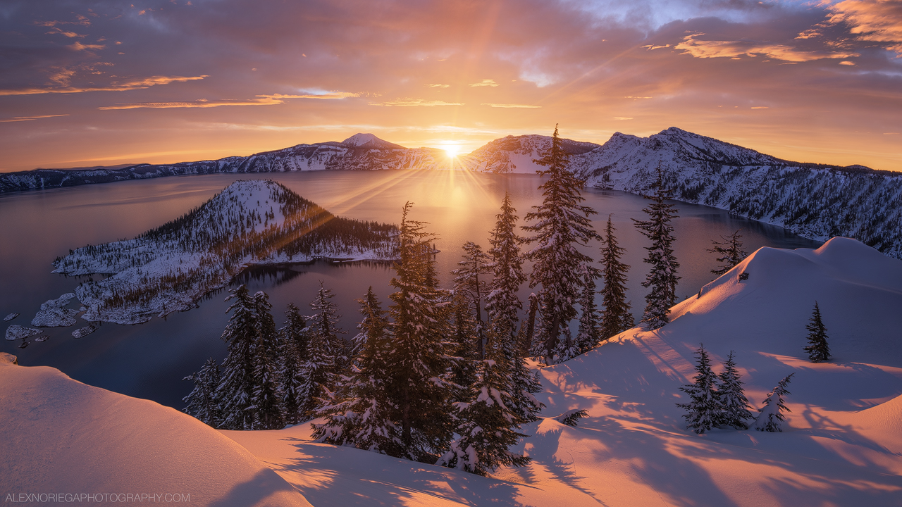

One of the greatest speeches of all time would include:
I have a dream that one day on the red hills of Georgia the sons of former slaves and the sons of former slaveowners will be able to sit down together at a table of brotherhood. I have a dream that one day even the state of Mississippi, a desert state, sweltering with the heat of injustice and oppression, will be transformed into an oasis of freedom and justice.I have a dream that my four children will one day live in a nation where they will not be judged by the color of their skin but by the content of their character.
I have a dream today.
© 2015 Columbus Dong